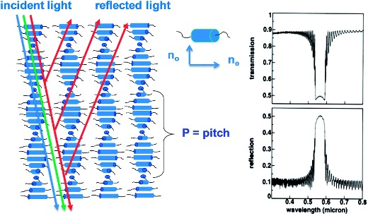

Projects
Senior Capstone Project
Correlating Federal Aviation Administration (FAA) Data Events to Calculate Optimal Response Time for Laser Blocking Sensors
Jacqueline M. Pezan and Jason J. Keleher
Executive Summary
According to the Federal Aviation Administration (FAA), the threat of laser attacks on commercial, private, and federal planes is increasing. Studies report that a majority of the lasers used were easily obtained via commercial sources. Laser threats can severely affect the pilot’s ability to operate the aircraft due to flash blindless depending on the laser strength and distance from occurrence. Many airlines have implemented laser safety glasses for pilots and procedural changes as a solution; however, both proposed solutions have significant drawbacks. The glasses distort the colors seen by the human eye, and procedural changes from the flight crew leave room for human error. An annual summary report released by the (FAA) showed that in 2019, there were 6,136 reports of people on the ground shining lasers at aircrafts1. This work will employ liquid crystal (L.C.) sensor technology which will switch upon laser radiation via changes in the electric field. Nematic crystals change direction spontaneously when activated via photoisomerization processers. This “switching” effect occurs upon optical and electrical perturbation through cis-trans isomerization, flipping the direction of the L.C.s and act as a polarizing lens. The ultimate goal of this work is to draw a correlation between existing data in the FAA databases to determine the necessary properties of liquid crystal for optimal safety performance.
Progress Report
Introduction
In recent years, laser devices have become less expensive and more commonplace in products like CD/DVD players, supermarket scanners, construction, medical and industrial purposes. While pointing a laser at aircraft is a federal crime, reports indicate that the number of laser incidents is dramatically increasing despite heightened public awareness of the serious safety risk posed by lasers. Laser attacks pose a threat to aviation safety due to how lasers affect a pilot’s vision upon impact.
The Federal Aviation Administration (FAA) imposed fines for “interfering” and “incapacitation” of a flight member by a laser. However, despite this regulation in 2012, there were still 3,482 laser incidents1. One of the solutions available from airlines to combat laser detriment is protective eyewear that protects the wearer from green laser energy. However, filtering light reduces the total amount of light entering the eye that inversely impacts visibility. Procedural changes implemented to combat laser detriment include physically shielding one’s eyes from the laser beam in an attempt to reduce beam visibility within the aircraft; however, attacks can be unpredictable, and these methods can be unreliable.
Stimuli-responsive photonic crystals have received a lot of interest in the last few decades for possible applications in the field of optical sensors. The periodic alternation of the refractive index in these photonic materials leads to the reflection of light that is dependent on applied voltage3. Liquid crystals are attractive materials for optical sensors due to their ability to form one-dimensional photonic structures through self-assembly methods. The liquid crystalline phase of a molecule is the phase between the liquid-state and solid-state of the crystals. The nematic phase shifts the crystals to a 90-degree angle and breaking rotational symmetry, which results in a shift in the polarization of light (photochemical switching).
By studying the factors of laser interference, the electro-optical properties of nematic crystals can be deduced. The strength of these lasers is continuously increasing, allowing for attacks at greater altitudes to occur, intensifying the effects on visual impairment that are dependent on the wavelength of the laser, power level, and duration of exposure. The transmission of light is critical to understanding the crystalline structure necessary for light deflection. FAA databases and reports will be utilized to conduct data analysis.
Intro to Computer Science Final Project
Modeling Federal Aviation Administration (FAA) Data for 2019 Reports
Professor: Eric Pogue
Project Overview
This work will use libraries from Python to model and visualize public data from the Federal Aviation Administration (FAA) on laser attacks on aircrafts. I plan on using Python libraries for data visualization. The idea for this work came from my current senior capstone project. By the conclusion of this project, this webpage will summarize an overview of my capstone project including modeled, analyzed and correlated data.
Progress Report
Prioritized Features
-
Python modeling of basic data sets
- Altitude of Incidents vs. Year
- Number of Incidents vs. Year
- Rate of Incidents
- Compile data figures and analyses into a website that summarizes capstone project
Bonus Features
-
Python modeling of additional data sets
- Illuminations Per Region
- Incidents Per Month
- Frequency of Laser Color in Incidents
Languages and Platforms
- HTML
- CSS
- Python
- GitHub
- Microsoft Azure
Use of In-Class Concepts
-
Using a library in Python
We used the "turtle" library in Sprint 5 for the "turtleLiteDraw" assignment to to modify our text files and manipulate the code. This project will use modules like Pandas and Matplotlib to model data.
-
Modifying and Publishing a Webpage
My final project will include a published html webpage compiled of graphs from Python along with data explanations for each graph.
Use of External Concepts
-
Using different libraries in Python
- Matplotlib
- Pandas
-
Modeling Data with Python

Helpful Links/Resources
Data Visualization With PythonPowered by w3.css